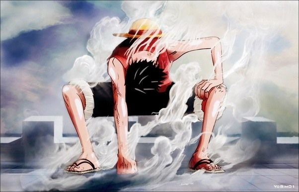
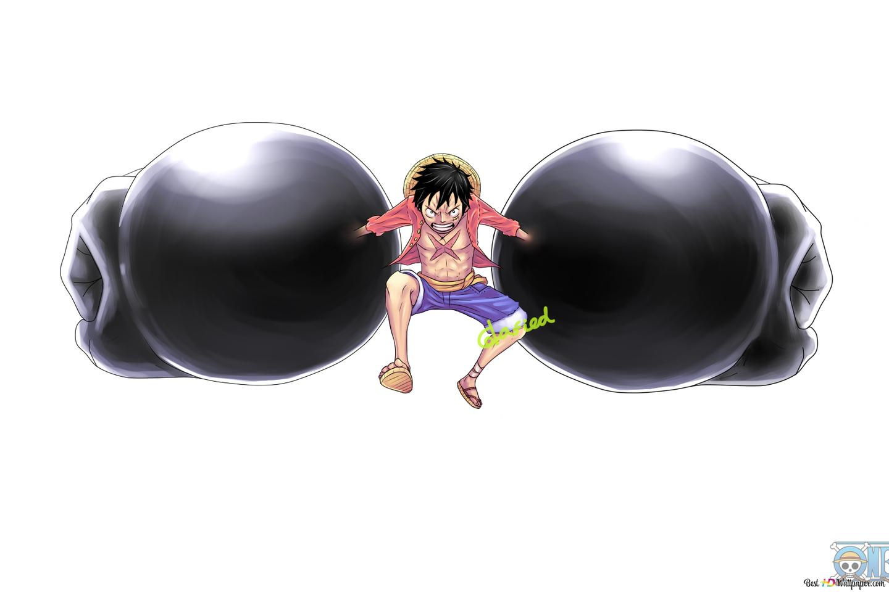

Transformaciones de Monkey D. Luffy
1. Monkey D. Luffy

- Lugar de origen: Villa Fucsia (Foosha Village), en el mar Este (East Blue)
- Padre: Monkey D. Dragon, líder del Ejército Revolucionario
- Abuelo: Vicealmirante Monkey D. Garp
- Hermanos juramentados: Portgas D. Ace y Sabo, aunque no tienen vínculo sanguíneo
2. Gear 2 (Segunda Marcha)

- Luffy acelera su circulación sanguínea, aumentando significativamente su velocidad y fuerza. Esta transformación se caracteriza por la emisión de vapor y un notable cambio en su piel.
- Aunque inicialmente le causaba gran desgaste físico, con entrenamiento logró utilizarla sin consecuencias graves.
3. Gear 3 (Tercera Marcha)

- Luffy infla sus huesos al morderse el pulgar, ampliando partes de su cuerpo como brazos o piernas, incrementando su potencia ofensiva de forma dramática.
- Antes del salto temporal, esta técnica lo hacía volverse diminuto durante unos minutos, aunque esa limitación ya no persiste.
4. Gear 4 (Cuarta Marcha): Boundman, Tankman y Snake-Man

- Bound-Man (Bounce-Man): Inflando sus músculos, adquiere gran fuerza, agilidad y capacidad de rebotar. Es una forma equilibrada y posiblemente la más utilizada.
- Tank-Man: Centrada en defensa, Luffy se vuelve enorme y resistente gracias al Haki, convirtiendo su cuerpo en una especie de escudo viviente.
- Snake-Man: Focalizada en velocidad y flexibilidad, permite ataques rápidos y elásticos, dificultando la evasión del enemigo.
5. Gear 5 (Quinta Marcha)

- La transformación más poderosa y estrafalaria hasta la fecha. Despierta el poder oculto de su Fruta Gomu Gomu (o Hito Hito: modelo Nika), lo que le otorga una libertad total sobre su cuerpo y entorno, con un estilo visual caricaturesco: cuerpo y ropa blanqueados, cabello y cejas flameantes, y hasta la capacidad de convertir materiales en goma a su favor.
- Este Gear fue adaptado al anime alrededor del episodio 1071 y consolidado en el posterior 1072.